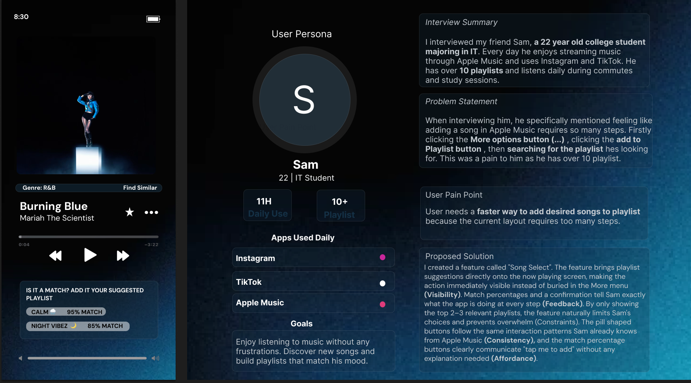
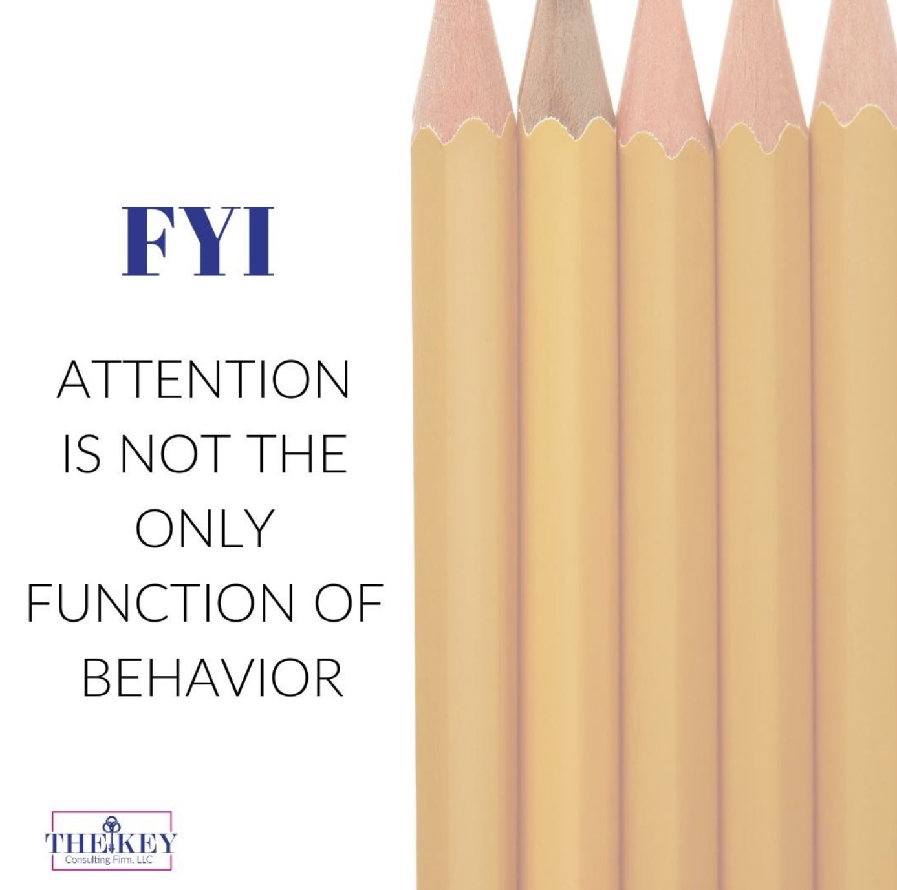
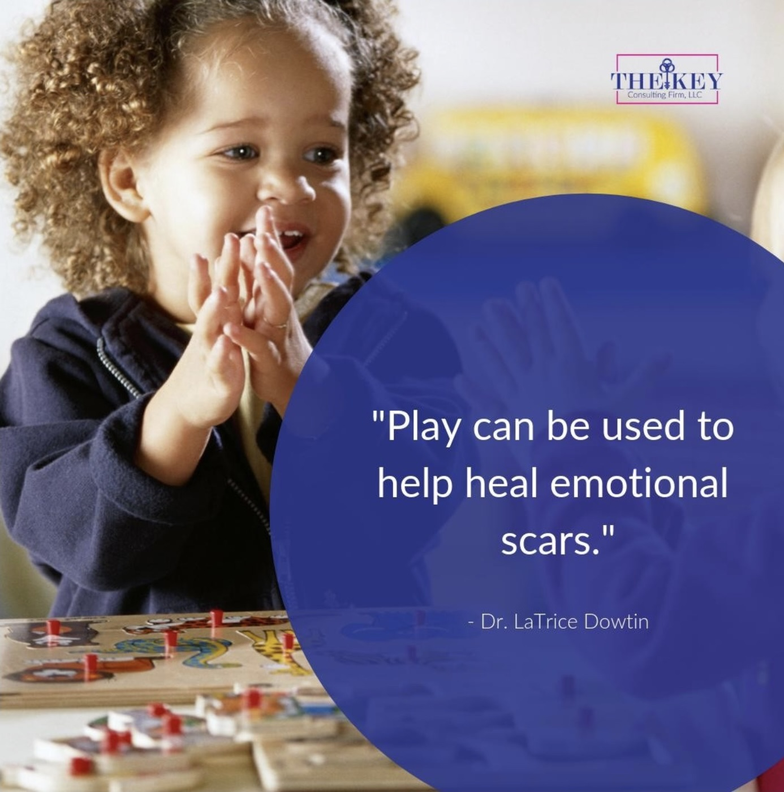

Projects & Case Studies
Apple Music: Song Select Redesign
CIS 435: Human Computer Interaction · Towson University · Spring 2026

This project began with a real conversation. I interviewed my friend Sam, a 22-year-old IT student and daily Apple Music user to understand friction points in his listening experience. His frustration was immediate and specific: adding a song to a playlist takes too many steps.
The current flow requires tapping the More Options (…) button, then Add to Playlist, then searching through 10+ playlists to find the right one. For someone who listens for hours daily, this interrupts the flow of the experience constantly.
My solution "Song Select" surfaces playlist suggestions directly on the Now Playing screen. Using match percentages, it shows the 2–3 most relevant playlists right where the user already is, reducing cognitive load and keeping the experience fluid.
The design applies five HCI principles: Visibility (action is always on-screen), Feedback (match % and confirmation messaging), Constraints (only top matches shown), Consistency (pill buttons match Apple's existing design language), and Affordance (buttons clearly communicate "tap me").
My Role
UX Researcher · UI Designer · Prototyper
Research Method
1:1 User Interview · User Persona Development · Pain Point Mapping
Tools Used
Figma · Presentation Deck
Core Problem
Adding a song to a playlist requires 3 separate steps and a search through 10+ playlists interrupting the listening experience.
Solution
A "Song Select" widget on the Now Playing screen showing top 2–3 playlist matches with a single-tap add action and match percentage indicators.
Maryland.gov Accessibility Redesign
CIS 435: Human Computer Interaction · Towson University · Spring 2026
The Maryland.gov website serves millions of residents including elderly users, people with visual impairments, and users with cognitive disabilities. My redesign identified three distinct user personas and addressed each one systematically through HCI principles.
Persona 1: Visually Impaired User: The original site offered no accessibility shortcuts on the homepage. My redesign adds a persistent accessibility bar with Read Aloud, Text Enlargement, and Translation buttons at the very top of every page.
Persona 2: Cognitively Disabled User: The original homepage overwhelms with options. I reduced the primary navigation to three clear categories with descriptive hyperlinks and added a prominent search bar in the hero so users can find what they need without scanning multiple menus.
Persona 3: Older Adult: Unfamiliar with dropdown navigation, older users benefit from the prominent "Need Help?" button at the bottom of the page with a direct phone number reducing pressure to navigate independently.
Design Focus
Accessibility · Inclusive Design · Information Architecture
Personas Designed For
Visually Impaired Users · Cognitively Disabled Users · Older Adults
HCI Connections
Nielsen's "Help & Documentation" heuristic · Accessibility heuristic · Cognitive load reduction
Read Aloud Button
Supports visual impairment and older adults by making all page content audibly accessible.
Text Enlargement
Allows users to increase font size without leaving the page, addressing visual accessibility directly.
Search Bar in Hero
Reduces cognitive load for users who struggle with multi-menu navigation.
Clear Hyperlinks per Category
Gives direct access to key sections Benefits, Services, Explore without extra clicks.
Phone Number Help Banner
Provides older adults a direct, familiar way to get assistance without navigating alone.
Alt Text on All Images
Ensures screen reader compatibility for users with visual impairment throughout the site.
The Key Consulting Firm Brand & Social
Graphic Designer · Remote · January 2019 – January 2021

Sample Work


The Key Consulting Firm is an educational and mental health consulting organization specializing in culturally responsive support for Black children and families. During my two years as their graphic designer, I was responsible for all visual content that represented the organization externally.
My primary responsibilities included maintaining a social media content calendar across Facebook and Instagram, designing promotional materials for workshops and community events, and producing digital assets that felt both professional and warm reflecting the organization's mission-driven identity.
Every graphic I produced had to balance two goals: aesthetic quality that builds organizational credibility, and accessibility to the communities the firm serves. I used Canva and Adobe Creative Suite to produce consistent, on-brand visuals including event flyers, social posts, photo-edited imagery, and promotional banners.
This role taught me the discipline of designing within a brand system and the responsibility that comes with representing an organization whose work directly impacts families.
My Role
Graphic Designer (Contract, Remote)
Deliverables
Social media graphics · Event flyers · Promotional banners · Photo-edited visuals · Brand-consistent digital assets
Tools Used
Canva · Adobe Creative Suite · Facebook · Instagram
Impact
Consistent brand presence across platforms, supporting community outreach for educational and mental health programming serving Black children and families.